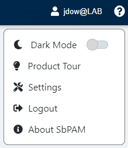
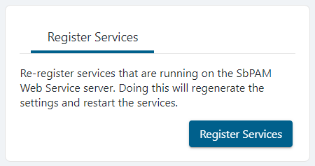

Summary
The following steps should be taken if instructed by Netwrix Support to regenerate Netwrix Privilege Secure's JWT Signing Certificate.
Instructions
IMPORTANT: While many of these steps use drive letter
C:in the path, this will differ for Program Files paths if Privilege Secure was installed to a different drive letter. All references toC:\ProgramData\Stealthbits\PAMwill use drive letterC:in all environments.
1. Stop all SbPAM and IIS services by running the following in an elevated PowerShell window:
Stop-Service sbpam* -Force Stop-Service w3svc -Force
2. In Windows Explorer, navigate to the Program Data directory for Privilege Secure (for example, C:\ProgramData\Stealthbits\PAM\). From here, open the WebService folder, and then open appsettings.jwt.json in Notepad. In appsettings.jwt.json, locate the "Jwt" section (such as the example below) and delete all of it. This is the trigger to generate a new JWT Signing Certificate:
"Jwt": {
"CertificateFile": "C:\\ProgramData\\Stealthbits\\PAM\\Web\\jwtsign.pfx",
"CertificatePassword": "...",
"CertificateThumbprint": "...",
"Encryptionkey": "..."
},
3. Navigate to C:\ProgramData\Stealthbits\PAM\Web and delete the jwtsign.pfx file.
4. Navigate back up one level to the PAM folder, and then to the Webservice folder. Open appsettings.log.json in Notepad and repeat step #2 if it also has a "jwt" section.
5. Run the following commands in an elevated PowerShell window (changing the path to the PAM folder depending on the install path):
cd C:\Program Files\Stealthbits\PAM\KeyGen & .\SbPAM.KeyGen.Exe
6. Open appsettings.jwt.json again from step #2, and verify the "Jwt" section has been recreated.
7. Start all Privilege Secure and IIS services by running the following in an elevated PowerShell window:
Start-Service sbpam* Start-Service w3svc
8. Log in to the Privilege Secure web application as an Admin, and re-register services by clicking the logged-in user's name in the upper-right, clicking Settings, and then clicking Register Services.

